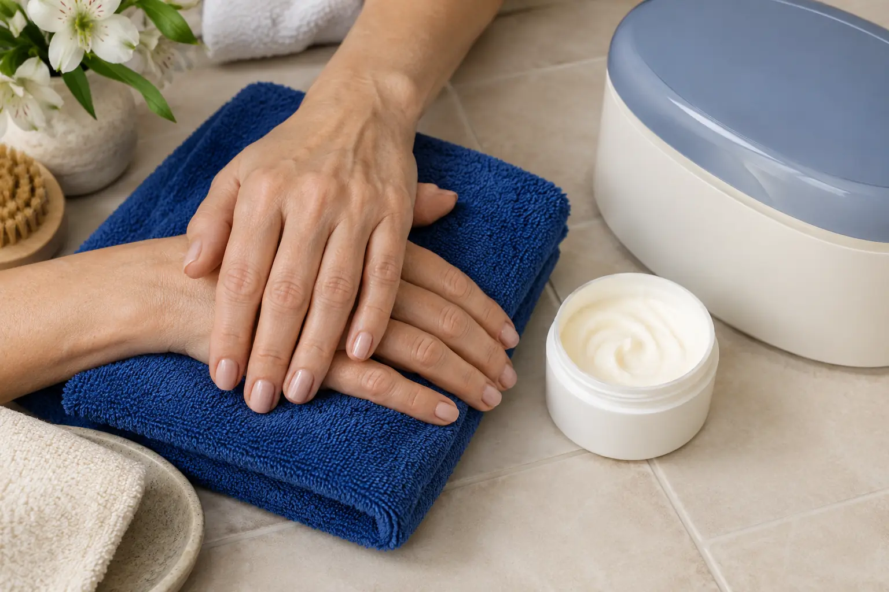

Rankų ir pėdų SPA: odos priežiūra, parafinas ir manikiūro skirtumai
Autorius: Madbeauty redakcija · Numatyta 2026 m. lapkričio 13 d. 10:00 (Lietuvos laiku)
Rankų ir pėdų SPA apimtis: odos priežiūra, parafinas ir atskiri nagų darbai. Kaip palyginti paketą ir jo produktų instrukcijas?

Rankų ar pėdų SPA pavadinimas pats savaime nepasako, kokie darbai įtraukti: tai gali būti odos priežiūros elementai, parafino procedūra ar paketas su atskirai nurodytais nagų darbais. Lyginkite paslaugas pagal zoną, konkrečius įtrauktus veiksmus, naudojamą produktą ir jo instrukcijas. Vien iš žodžio „SPA“ negalima spręsti, kad bus atliekamas manikiūras ar pedikiūras.
Odos priežiūra, nagų darbai ir parafinas – atskiri paketo elementai
Kad du pasiūlymus būtų lengviau palyginti, išskaidykite jų pavadinimus į konkrečius darbus:
- Odos priežiūra – nurodykite, kuriai zonai ji skirta ir kokie veiksmai įtraukti. „SPA“ etiketė neatskleidžia nei produkto, nei tikslios eigos.
- Nagų darbai – patikrinkite, ar pasiūlyme yra nagų formos tvarkymas, odelių priežiūra, lakavimas ar dangos nuėmimas. Tai gali būti atskiros paslaugos.
- Parafinas – vertinkite kaip konkretų įvardytą pasiūlymo elementą, o ne kaip viso rankų ar pėdų SPA sinonimą. Pavyzdžiui, peržiūrėtame Treatwell Vilniaus sąraše parafino terapija rodoma kaip atskiras pasiūlymas. Tai vieno katalogo ir miesto pavyzdys, o ne bendras paslaugos standartas ar visos Lietuvos kainoraštis.
Rankų ir pėdų SPA palyginimo matrica
- Rankų SPA. Tikrinkite, ar siūloma odos priežiūra, ar kartu tvarkomi nagai, ar įtrauktas parafinas ir kokio produkto instrukcija pateikiama.
- Pėdų SPA. Atskirkite pėdų odos priežiūros darbus nuo nagų tvarkymo, lakavimo ar kitų pedikiūro elementų. Patikrinkite, ar nurodyta, kas įeina į pasirinktą variantą.
- Manikiūras ar pedikiūras. Šių paslaugų aprašyme ieškokite konkrečių nagų darbų. Jei ieškote būtent pėdų nagų ir priežiūros paslaugos, žr. pedikiūro gidą.
- Nagų danga. Jei įtrauktas gelinis lakavimas ar kita danga, vertinkite jį kaip atskirą darbo dalį ir ieškokite konkrečios sistemos priežiūros instrukcijos.
Iliustracinė situacija: norite rankų priežiūros, bet nagų lakuoti nenorite. Tada palyginkite, ar pasiūlyme aiškiai atskirti odos priežiūros darbai ir nagų tvarkymas, o ne rinkitės vien pagal „SPA“ pavadinimą. Jei norite ir spalvotos dangos, papildomai pasitikrinkite, ar ji įtraukta į paketą; apie gelinio lakavimo apimtį skaitykite gelinio lakavimo gidą.
Rankų ir pėdų priežiūros kortelė pagal produktą
Prieš vizitą užsirašykite keturis dalykus: pasirinktą zoną, į pasiūlymą įtrauktus darbus, produkto pavadinimą (jei jis nurodytas) ir kur rasti jo priežiūros instrukciją. Po paslaugos vadovaukitės konkrečiam produktui ar procedūrai pateikta informacija. Universalių laikymo trukmių ar priežiūros veiksmų šis gidas nenustato.
Nagų dangos instrukcija – atskirai nuo odos priežiūros
Jei pakete yra lakavimas ar kita danga, pasitikrinkite, ar tai įskaičiuota, ir paprašykite būtent tai dangai skirtos priežiūros informacijos. Odos priežiūros dalis savaime nepaaiškina, kaip elgtis su nagų danga.
Kada kosmetinės paslaugos patarimo nepakanka
Pastebėję nago spalvos ar kitą jo išvaizdos pokytį, nemaskuokite jo dirbtine danga vien tam, kad jo nesimatytų. Amerikos dermatologų akademija pataria dėl pakitusio nago pirmiausia kreiptis į gydytoją, o ne jį dengti dirbtiniu produktu. Ši rekomendacija nėra Lietuvos teisinė norma. AAD informacija apie manikiūro ir pedikiūro saugą.
Procedūrų aprašai kataloge: Rankų SPA, Pėdų SPA, Rankų ir pėdų priežiūra. Miestą ir realaus teikėjo pasiūlymą pasirinkite kataloge, kai tokia pasiūla pateikta.
Susiję gidai
Šaltiniai
- Treatwell · parafino ir rankų SPA pasiūlos variantai · www.treatwell.lt
- AAD · manikiūro ir pedikiūro sauga · www.aad.org